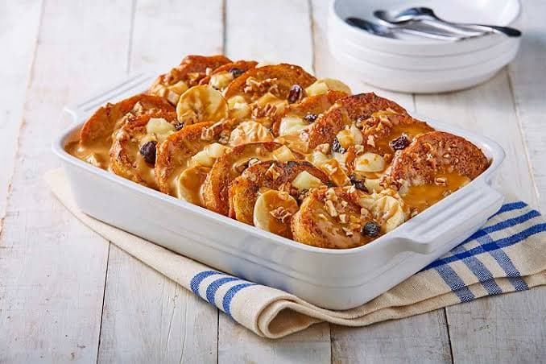

Capirotada
- 2 Ɩitros de agua
- 2 piloncillos en trozos (225 g cada uno)
- 20 cm de canela en rama
- 16 rebanadas de bolillo de 1 cm de grosor
- 2 tazas de aceite de maíz
- 1/3 de taza de cacahuates pelados y tostados
- 1 taza de pasitas negras
- 50 g de queso Cotija o añejo desmoronado
Modo De Preparacion
- Calentar en una olla con agua el piloncillo y la canela; hervir a fuego bajo por 25 minutos, dando movimientos para asegurarse de que el piloncillo se deshaga e ir incorporando las pasitas y retire del fuego. Mantenga caliente.
- Calentar en un sartén un poco del aceite y fría las rebanadas de pan por ambos lados; añada poco a poco más aceite conforme vaya friendo las demás rebanadas. Colóquelas sobre servilletas de papel para retirar el exceso de aceite; reserve.
- Precaliente el horno a 180 °C. En un molde cuadrado de 20 centímetros por lado aproximadamente, haga una cama o capa de pan, bañe con el jarabe toda la superficie y coloque encima los cacahuates y las pasitas. Repita este paso hasta lograr 2 o 3 capas más de pan (utilice todos los cacahuates y pacitas).
- Finalmente, espolvoree el queso en la superficie. Cubra con papel aluminio y hornee durante 1 hora. A mitad del horneado, revise y añada más jarabe, asegurándose de que todo el pan esté bien empapado (debe utilizar todo el jarabe). Sirva caliente, tibia o fría.